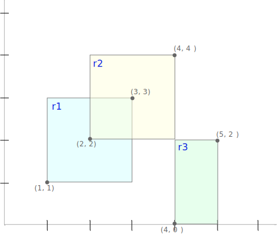

Magic Methods#
We said above that what we really wanted was to express
movement of points very compactly, as addition. We
saw that addition of tuples or lists did not act as we
wanted; instead of (3,4) + (5,6) giving us (8,10), it
gave us (3,4,5,6). We can almost get what we want by describing
how we want + to act on Point objects. We do this by
defining a special method __add__:
from numbers import Number
class Point:
"""An (x,y) coordinate pair"""
def __init__(self, x: Number, y: Number):
self.x = x
self.y = y
def move(self, d: "Point") -> "Point":
"""(x,y).move(dx,dy) = (x+dx, y+dy)"""
x = self.x + d.x
y = self.y + d.y
return Point(x,y)
def move_to(self, new_x, new_y):
"""Change the coordinates of this Point"""
self.x = new_x
self.y = new_y
def __add__(self, other: "Point"):
"""(x,y) + (dx, dy) = (x+dx, y+dy)"""
return Point(self.x + other.x, self.y + other.y)
Special methods are more commonly known as magic methods.
They allow us to define how arithmetic operations like +
and - work for each class of object, as well as
comparisons like < and ==, and some other operations.
If p is a Point object, then p + q is interpreted as
p.__add__(q). So finally we get a very compact and
readable notation:
p = Point(3,4)
v = Point(5,6)
m = p + v
print(f"({m.x}, {m.y})")
(8, 10)
Magic for printing#
Suppose we wanted to print a Point object. We
could do it with an f-string, as we have above:
print(f"p is ({p.x}, {p.y})")
p is (3, 4)
That would give us a reasonable printed representation, like “p is (3, 4)”, but it is tedious, verbose, and easy to get wrong. What if we just wrote
print(f"p is {p}")
p is <__main__.Point object at 0x1055dc050>
That isn’t a very useful way to print an object!
str()d, not shaken#
If we want to print Point objects as simply
as we print strings and numbers, but we want the
printed representation to be readable, we will need
to write additional methods to describe how a
Point object should be converted to a string.
In fact, in Python we normally write two magic
methods for this: __str__ describes how it
should be represented by the str() function,
which is the representation used in print
or in an f-string like f"it is {p}". We might
decide that we want the object created by Point(3,2)
to print as “(3, 2)”. We would then write a
__str__ method in the Point class like this:
class Point:
"""An (x,y) coordinate pair"""
def __init__(self, x: Number, y: Number):
self.x = x
self.y = y
def move(self, d: "Point") -> "Point":
"""(x,y).move(dx,dy) = (x+dx, y+dy)"""
x = self.x + d.x
y = self.y + d.y
return Point(x,y)
def move_to(self, new_x, new_y):
"""Change the coordinates of this Point"""
self.x = new_x
self.y = new_y
def __add__(self, other: "Point"):
"""(x,y) + (dx, dy) = (x+dx, y+dy)"""
return Point(self.x + other.x, self.y + other.y)
# Two new methods, used by the "str" and "repr"
# functions.
def __str__(self) -> str:
"""Printed representation.
str(p) is an implicit call to p.__str__()
"""
return f"({self.x}, {self.y})"
def __repr__(self) -> str:
"""Debugging representation. This is what
we see if we type a point name at the console.
"""
return f"Point({self.x}, {self.y})"
Now if we again execute
p = Point(17,13)
print(f"p is {p}")
p is (17, 13)
we get a more useful result.
A repr() for debugging#
Usually we will also want to provide a different
string representation that is useful in debugging
and at the Python command line interface. The
string representation above may be fine for end users,
but for the software developer it does not differentiate
between a tuple (3, 4) and a Point object (3, 4).
We can define a __repr__ method to give a string
representation more useful in debugging. The function
repr(x) is actually a call on the __repr__ method
of x, i.e., x.__repr__().
Although
Python will permit us to write whatever __repr__
method we choose, by accepted convention is to make
it look like a call on the constructor, i.e., like
Python code to create an identical object. Thus, for
the Point class we might write:
def __repr__(self) -> str:
return f"Point({self.x}, {self.y})"
Now we can write
print(f"repr(p) is {repr(p)}")
repr(p) is Point(17, 13)
More often, the repr function is called implicitly
when we just enter an expression at the console.
p + m
Point(25, 23)
The print function automatically applies the str function to its
arguments, so defining a good __str__ method will ensure it
is printed as you like in most cases. Oddly, though,
the __str__ method for list applies the __repr__ method
to each of its arguments, which we can see by writing
p = Point(22, 17)
v = Point(18, 13)
print(p)
print(v)
print([p, v])
(22, 17)
(18, 13)
[Point(22, 17), Point(18, 13)]
Check your understanding#
Which of the following are legal, and what values do they return?
str(5)(5).str()(5).__str__()__str__(5)repr([1, 2, 3])[1, 2, 3].repr()[1, 2, 3].__repr__()
What does the following little program print?
class Wrap:
def __init__(self, val: str):
self.value = val
def __str__(self) -> str:
return self.value
def __repr__(self) -> str:
return f"Wrap({self.value})"
a = Wrap("alpha")
b = Wrap("beta")
print([a, b])
Comparisons#
We saw that defining a __add__ magic method allowed us to write
p + q in a compact and natural way by interpreting p + q as
p.__add__(q). Each of the common arithmetic operations (+, -,
*, /) can be defined by magic methods, as well as several that
are not so common outside programming like += and //.
Python
permits you to magic methods as you see fit. You might think that
any sensible definition of + would have the property that
(a + b) == (b + a) (commutativity of addition), but you can easily
define an __add__ method that does not have this property.
There are
many useful mathematical objects that do not share all the familiar
properties of operations on real numbers, so Python gives us freedom
(and responsibility) to define operations in whatever way makes sense
for the class of objects we wish to represent.
The relation between operations is particularly significant for
comparisons. Python lets you define magic methods for <, <=,
==, >=, and >. Each of these is independent of the others.
You could write a __lt__ method for < and a __gt__ method for
> such that (a > b) and (a < b) could be True. That would be
a very bad idea, but Python wouldn’t stop you. The only connection
between comparisons that Python provides by default is that a != b
implemented by evaluating a == b and then flipping the result from
True to False or vice versa.
Typically you will want some systematic relations among the
comparison methods, and often those relations will mirror
the way comparisons of numbers work. For example, you might typically
want a < b to be equivalent to b > a. Also you
won’t want to bloat your code by
defining each comparison
magic method entirely independently. You can reduce duplication
(and opportunity for error) by defining a minimum number of basic
comparisons, and then defining other comparisons in terms of those
basic operations.
Consider for example a class for rectangles in which, for some
reason, we have decided that > should mean “bigger than”. It would
be sensible for this ordering to have the same properties as
ordering among real numbers, such as for example a >= b being true
if either a > b or a == b. We could then define a rectangle
class with just two basic comparisons (let’s call them the root
comparisons), and the rest derived from them.
class Point:
"""An (x,y) coordinate pair"""
def __init__(self, x: Number, y: Number):
self.x = x
self.y = y
class Rect:
"""A rectangle defined by its lower-left and upper-right corners"""
def __init__(self, p1: Point, p2: Point):
"""Represented by lower left and upper right corners,
which might differ from p1 and p2 (e.g., if p1 is above and
to the right of p2).
"""
self._ll = Point(min(p1.x, p2.x), min(p1.y, p2.y))
self._ur = Point(max(p1.x, p2.x), max(p1.y, p2.y))
def width(self) -> Number:
return self._ur.x - self._ll.x
def height(self) -> Number:
return self._ur.y - self._ll.y
def area(self) -> Number:
return self.width() * self.height()
# Let's define "greater than" as "bigger than", giving a total ordering
# on rectangles by size.
# (This is probably a bad idea, but we'll use it rather than
# starting a new example from scratch.)
####
# Root comparisons <, ==
####
def __lt__(self, other: 'Rect') -> bool:
"Order rectangles by size"
return (self.area() < other.area())
def __eq__(self, other: 'Rect') -> bool:
return (self.area() == other.area())
####
# Derived comparisons delegate to root comparisons
# Each makes calls to a magic method for root comparisons
####
def __gt__(self, other: 'Rect') -> bool:
return other < self
def __ge__(self, other: 'Rect') -> bool:
return not (self < other)
def __le__(self, other: 'Rect') -> bool:
return self < other or self == other
r1 = Rect(Point(1,1), Point(3,3)) # 2x2 rect area = 4
r2 = Rect(Point(2, 2), Point(4, 4)) # 2x2 rect area = 4
r3 = Rect(Point(4,0), Point(5, 2)) # 1x2 rect area = 2

# Sanity checks on comparisons defined above
assert r1 == r2 # Same size
assert r1 != r3 # this is (not r1.__eq__(r2))
assert r1 > r3 # r1 is bigger
assert r3 < r1 # r1 is bigger
assert r1 >= r2 # a == b implies a >= b
assert r1 >= r3 # a > b implies a >= b
assert r1 <= r2 # a == b implies a <= b
assert r3 <= r1 # a < b implies a <= b
print("Passed some sanity checks for ordering of rectangles by size")
Passed some sanity checks for ordering of rectangles by size
In this example I chose < and == as the root comparisons, but
other choices could work as well. If we assume that every rectangle
is either less than, greater than, or equal to any other rectangle
(in mathematical terms, if rectangles are totally ordered),
we could even have gotten away with a single root comparison and
derived a == b as not ((a < b) or (a > b)), but it would not
have simplified our code.
More Magic#
A more complete list of operations and built-in functions that are delegated to special (magic) methods is provided in an appendix.
A comprehensive description of special methods can be found in the Python language reference. The comprehensive description is dense reading and assumes familiarity with many concepts that will not typically be within the experience of beginning Python programmers. You may want to glance at it now, but don’t expect to understand much of it yet. It is the definitive reference to use sometime later in your career when you are building infrastructure for your developer community, or perhaps considering how to incorporate similar facilities in a new programming language.